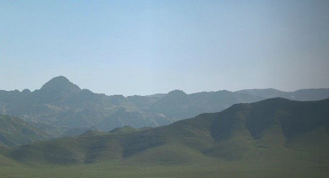

Qadimgi Zarafshon daryosi fors tilidan tarjima
qilinganida – “zar oqadigan daryo” degan ma’noni
anglatadi. Bundan qumlari oltin bilan toʻyingan voha
nomi kelib chiqadi. Jugʻrofiy joylashuvi jihatidan
Zarafshon vohasi Oʻzbekistonning markaziy qismini oʻz
ichiga oladi, shimoldan Nurota togʻlari, qumli
Sundukli choʻllari, gʻarb va shimoli-gʻarbdan Qoraqum
va Qizilqum choʻllari oʻrab turtadi.
Zarafshon vohasi Oʻzbekiston hududida goh kengayib,
goh torayib boradi. Kengaygan qismida Samarqand,
Buxora va Qorakoʻl vohalari, toraygan qismida – Hazar
va Qorakoʻl yoʻlaklari joylashgan. Samarqand vohasi
shu nom bilan ataladigan chuqurda joylashgan.
Samarqand kengaytmasi 70-80 km, uzunligi 220 km,
balandligi dengiz sathidan 350-905 m. Zarafshon vohasi
gʻarbga tomon kengayib, Buxoro vohasini tashkil
qiladi. Shimoldan va gʻarbdan Qizilqum sahrosi,
janubi-gʻarbdan Qorakoʻl platosi uni Qorakoʻl
vohasidan ajratib turadi. Zarafshon vohasi Turon
plitasining egik nuqtasida joylashgan va neogen va
toʻrtlamchi davr qatlamlari bilan qoplangan. Neogen
davridan oldin bu yerlar dengiz edi. Soʻnggi tektonik
jarayonlar natijasida quruqlik hosil boʻlgan.
Keyinchalik Zarafshon daryosi irmogʻining
chuqurlashtirilishi natijasida daryo terasslari paydo
boʻldi. Vohani oʻrab turgan togʻlar paleozoy erasida
shakllangan.

Zarafshon vohasining shimolida Oqtov togʻlari
joylashgan. Oqtov shimolida Nurota-Quyitosh botigʻi
joylashgan, oʻrtacha balandligi 500-600 m, shimolida
Nurota tizmasi balandligi 1500 m va eng baland nuqtasi
Hayotboshi choʻqqisi (2169 m).
Zarafshon fizik-geografik mintaqasining eng muhim
xazinalaridan biri bu tabiiy gazdir. Tabiiy gaz
Jarqoq, Qorovulbozor, Buxoro va Qorakoʻl vohalari
atrofidan qazib olinadi.
Iqlimi va suvi
Zarafshon vohasi subtropik kengliklarda joylashgan.
Bulutsiz quyoshli kunlar koʻp, shuning uchun yiliga 1
sm yer yuzasiga 150 kkal radiatsiya yotadi. Quyosh
yorugʻligining davomiyligi yiliga 3000 soatga yetadi,
shuning uchun Zarafshon vohasida yoz issiq va quruq,
qishi esa nisbatan iliq.
Togʻlar bilan oʻralgan Zarafshon vohasining
shimoliy-sharqiy qismida shimoldan va shimoli-sharqdan
kirib keladigan sovuq havo massalarining ta’siri kam.
Va aksincha, vohaning gʻarbiy qismida ularning erkin
kirib borishi natijasida, u ancha salqin havo
kuzatiladi. Shunday qilib, vohaning sharqida
(Samarqandda) yanvarda oʻrtacha harorat -0,5°S,
gʻarbda (Shofirkonda) 1,5°S. Va aksincha, yozda
vohaning gʻarbiy qismi issiqroq, Shofirkonda iyulning
oʻrtacha harorati + 29,1°S, sharqda – Samarqand +
26°S. Vohani oʻrab turgan togʻlarda qish nisbatan
sovuq, yoz salqin.
Zarafshon fizik-geografik hududida yogʻingarchilik
butun hududga bir tekis taqsimlanmaydi va asosan bahor
va qishda tushadi. Gʻarbda yiliga 114-177 mm, sharqda
300-350 mm, atrofdagi togʻlarda (Omonqoʻtan) 881 mm
yogʻadi.
Yozi issiq, quruq va uzoq, bugʻlanish yogʻingarchilik
miqdoridan bir necha baravar yuqori. Natijada tuproq
juda quruq boʻlib, shoʻrlanadi va oʻsimliklar quriydi.
Faqat togʻlarda, ba’zan yoz oylarida yogʻingarchilik
boʻlishi mumkin. Bahor erta keladi. Ushbu davrda
yillik yogʻingarchilikning 43-50 foizi yogʻadi. Togʻli
joylarda yogʻin miqdori ancha koʻp. Shiddatli yomgʻir
natijasida sel toshqini boʻlishi mumkin.
Kuzi fasli ham iliq. Birinchi kuz sovuqlari
mintaqaning gʻarbiy qismida 22-25 oktabrda, sharqda –
28 oktyabrda va togʻlarda – 30 sentabrda kuzatiladi.
Qish odatda qisqa, yumshoq, moʻtadil boʻladi.
Yogʻingarchilik kuz fasliga nisbatan ancha koʻp; qish
oylari yillik yogʻingarchilikning 35-40% ini tashkil
qiladi. Yogʻingarchilik asosan qor shaklida boʻladi.
Mintaqadagi qor qoplamining qalinligi bir xil emas.
Vohaning gʻarbiy qismida qor 7 kungacha erimaydi va
6-7 sm.gacha, sharqiy qismida qor 15-20 kun davomida
erimaydi va 8–13 sm.ga, togʻli qismida qor qatlami
deyarli bir oy davom etadi va qalinligi 25-30 cm.ga
yetadi. Asosiy suv manbayi Zarafshon daryosidir. U
Tojikistonning Zarafshon muzlikalridan boshlanadi.
Daryoning faqat oʻrta va quyi oqimlari Oʻzbekistonga
tegishli. Daryo gʻarb tomon oqadi va Amudaryoga yetib
borguncha, u qumliklarga singib ketadi.
Qizilqum
“Qizilqum” nomi turkiy tildan tarjima qilinganida
“qizil qumlar” degan ma’noni anglatadi. Bu yerdagi
qizgʻish rang – bu choʻkindilarning nurashi va shamol
natijasida hosil boʻlgan qumlar. Sirdaryoboʻyining
shimoliy qismida, Markaziy Qoraqum singari, qadimgi
allyuvial tekislik boʻlib, togʻ jinslarining
toʻplanishi natijasida paydo boʻlgan qumlar
sargʻish-kulrang tusga ega. Choʻl yuzasi
janubi-sharqdan shimoli-gʻarbiy tomonga, Orol dengizi
sohiligacha qiyalama nishabliklarga ega.
Qizilqum – Yevrosiyoning eng katta choʻllaridan biri –
shimolda Orol dengizi qirgʻogʻidan janubda Zarafshon
daryosi tomon tor unumdor voha chizigʻigacha
choʻzilgan. Sharqiy va gʻarbiy tomondan 300 ming
kvadrat kilometr maydonga ega boʻlgan bu ulkan hudud
Sirdaryo va Amudaryo orqali Oʻrta Osiyoning katta
daryolari bilan chegaradosh. Qizilqum Navoiy
viloyatining katta qismini egallaydi.
Qizilqum rango-rang boʻlib, bu yerda oquvchi
qumlarning ulkan barxanlari saksovul va yantoq
butalari bilan qoplangan gil tekisliklari hamda
notekis qir-adirlardan iborat. Silliq va hatto
parketga oʻxshash joylar mavjud. Qoyali past togʻlar
boʻlsa-da, mineral buloqlar, saksovul bogʻlari,
milliard yoki undan ortiq yillik qadimgi tog‘ jinslari
mavjud. Hozirgi va avvalgi koʻllar mavjud.
Oʻzbekistondagi eng issiq va quruq joy – Qizilqumda.
Yillik yogʻingarchilik 70 mm.ga yetmaydi. Yozda
Qizilqum shunchalik koʻp quyosh issiqligini oladiki,
ular haddan tashqari qizib ketadi. Bu choʻl Qizil
Qumlar deb nomlanishi bejiz emas.